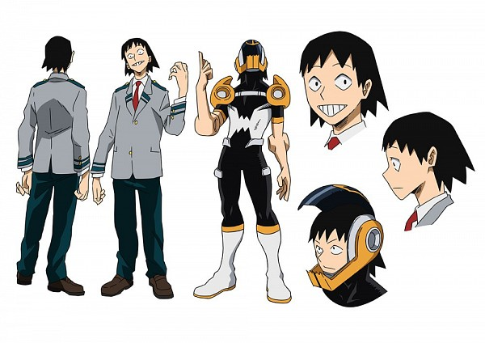

Мезо Шоджи
Мезо Шоджи
- Пол: ♂ Мужской
- Рост: 177 см.
- Возраст: 16
- Группа крови: B
- Родился в: Японии
Ханта Серо, также известный, как Ленточный герой: Целлофан — ученик Класса 1-A академии Юэй. Тренируется, чтобы стать профессиональным героем.
Внешность
Ханта - худощавый подросток среднего роста с тёмными волосами до плеч. Он почти постоянно ухмыляется. По словам Кацуки Бакуго и Полночи у него плоское лицо.

Его геройский костюм чем-то напоминает костюм байкера. Его дополняют мотоциклетный шлем и наплечники в виде диспенсеров для скотча.
Форма его локтей, из которых он стреляет клейкой лентой, также напоминает диспенсеры для скотча.
Личность
Ханта - простой и весёлый парень. Он склонен к пафосу и демонстрации своей причуды с лучшей стороны. Также он довольно болтлив и общителен.
Причуда
 Лента: причуда Ханты позволяет ему извлекать клейкую ленту из специальных отверстий, расположенных на локтях обеих рук, а также сматывать его обратно. Эта лента, судя по всему, намного прочнее обычного скотча. С помощью неё Ханта может перемещаться на большие расстояния, забираться на высокие места, создавать клейкие ловушки и оборачивать и переносить какие-либо предметы и даже людей. Недостатки этой причуды неизвестны, но похоже, что злоупотребление ей может вызвать у Ханты боль.
Лента: причуда Ханты позволяет ему извлекать клейкую ленту из специальных отверстий, расположенных на локтях обеих рук, а также сматывать его обратно. Эта лента, судя по всему, намного прочнее обычного скотча. С помощью неё Ханта может перемещаться на большие расстояния, забираться на высокие места, создавать клейкие ловушки и оборачивать и переносить какие-либо предметы и даже людей. Недостатки этой причуды неизвестны, но похоже, что злоупотребление ей может вызвать у Ханты боль.